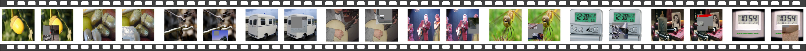
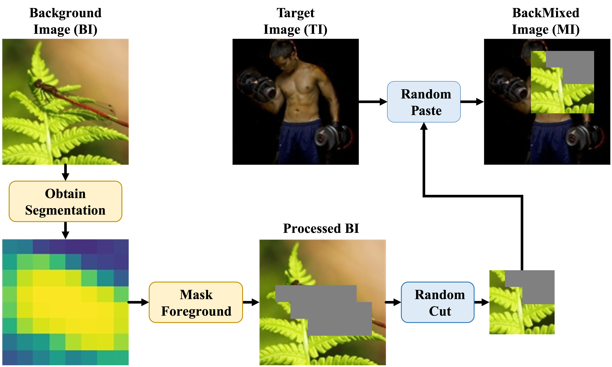

Open set recognition (OSR) requires models to classify known samples while detecting unknown samples for real-world applications. Existing studies show impressive progress using unknown samples from auxiliary datasets to regularize OSR models, but they have proved to be sensitive to selecting such known outliers. In this paper, we discuss the aforementioned problem from a new perspective: Can we regularize OSR models without elaborately selecting auxiliary known outliers? We first empirically and theoretically explore the role of foregrounds and backgrounds in open set recognition and disclose that: 1) backgrounds that correlate with foregrounds would mislead the model and cause failures when encounters 'partially' known images; 2) Backgrounds unrelated to foregrounds can serve as auxiliary known outliers and provide regularization via global average pooling. Based on the above insights, we propose a new method, Background Mix (BackMix), that mixes the foreground of an image with different backgrounds to remove the underlying fore-background priors. Specifically, BackMix first estimates the foreground with class activation maps (CAMs), then randomly replaces image patches with backgrounds from other images to obtain mixed images for training. With backgrounds de-correlated from foregrounds, the open set recognition performance is significantly improved. The proposed method is quite simple to implement, requires no extra operation for inferences, and can be seamlessly integrated into almost all of the existing frameworks.
BackMix first estimates and masks the foreground of the background image, then randomly cuts patches and pastes them on the target image to obtain the mixed image as the training sample.

| Method | SVHN | CIFAR10 | CIFAR+10 | CIFAR+50 | Tiny-ImageNet |
|---|---|---|---|---|---|
| OSRCI | 91.0 | 69.9 | 83.8 | 82.7 | 58.6 |
| CROSR | 89.9 | 88.3 | 91.2 | 90.5 | 58.9 |
| C2AE | 92.2 | 89.5 | 95.5 | 93.7 | 74.8 |
| CGDL | 93.5 | 90.3 | 95.9 | 95.0 | 76.2 |
| GDFR | 93.5 | 83.1 | 91.5 | 91.3 | 64.7 |
| PROSER | 94.3 | 89.1 | 96.0 | 95.3 | 69.3 |
| Plain* | 88.6 | 67.7 | 81.6 | 80.5 | 57.7 |
| +BackMix | 97.0+8.4 | 91.3+23.6 | 91.9+10.3 | 91.6+11.1 | 80.4+22.7 |
| ARPL | 95.3 | 89.8 | 91.3 | 90.8 | 76.0 |
| +BackMix | 96.4+1.1 | 91.0+1.2 | 93.4+2.1 | 92.3+1.5 | 76.3+0.3 |
| CSSR | 96.7 | 90.7 | 91.5 | 90.9 | 80.6 |
| +BackMix | 97.7+1.0 | 94.2+3.5 | 96.4+4.9 | 95.7+4.8 | 83.1+2.5 |
| Method | In:CIFAR10 / Out:CIFAR100 | In:CIFAR10 / Out:SVHN | ||||||
|---|---|---|---|---|---|---|---|---|
| DTACC | AUROC | AUIN | AUOUT | DTACC | AUROC | AUIN | AUOUT | |
| GCPL | 80.2 | 86.4 | 86.6 | 84.1 | 86.1 | 91.3 | 86.6 | 94.8 |
| RPL | 80.6 | 87.1 | 88.8 | 83.8 | 87.1 | 92.0 | 89.6 | 95.1 |
| CSI | 84.4 | 91.6 | 92.5 | 90.0 | 92.8 | 97.9 | 96.2 | 99.0 |
| OpenGAN | 84.2 | 89.7 | 87.7 | 89.6 | 92.1 | 95.9 | 93.4 | 97.1 |
| Plain* | 79.8 | 86.3 | 88.4 | 82.5 | 86.4 | 90.6 | 88.3 | 93.6 |
| +BackMix | 84.9+5.1 | 91.3+5.0 | 93.0+4.6 | 88.1+5.6 | 88.5+2.1 | 94.1+3.5 | 93.5+5.2 | 97.5+3.9 |
| ARPL | 80.8 | 88.2 | 90.4 | 84.4 | 82.8 | 90.5 | 84.6 | 95.3 |
| +BackMix | 84.0+3.2 | 91.1+2.9 | 92.1+1.7 | 89.0+4.6 | 94.9+12.1 | 98.5+8.0 | 97.6+13.0 | 99.1+3.8 |
| CSSR | 83.1 | 90.3 | 91.3 | 87.8 | 94.1 | 98.1 | 97.1 | 98.2 |
| +BackMix | 86.3+3.2 | 93.0+2.7 | 93.7+2.4 | 91.7+3.9 | 96.4+2.3 | 99.2+1.1 | 98.4+1.3 | 99.6+1.4 |
@ARTICLE{wang2025backmix,
author={Wang, Yu and Mu, Junxian and Huang, Hongzhi and Wang, Qilong and Zhu, Pengfei and Hu, Qinghua},
journal={IEEE Transactions on Pattern Analysis and Machine Intelligence},
title={BackMix: Regularizing Open Set Recognition by Removing Underlying Fore-Background Priors},
year={2025},
pages={1-12},
doi={10.1109/TPAMI.2025.3550703}
}